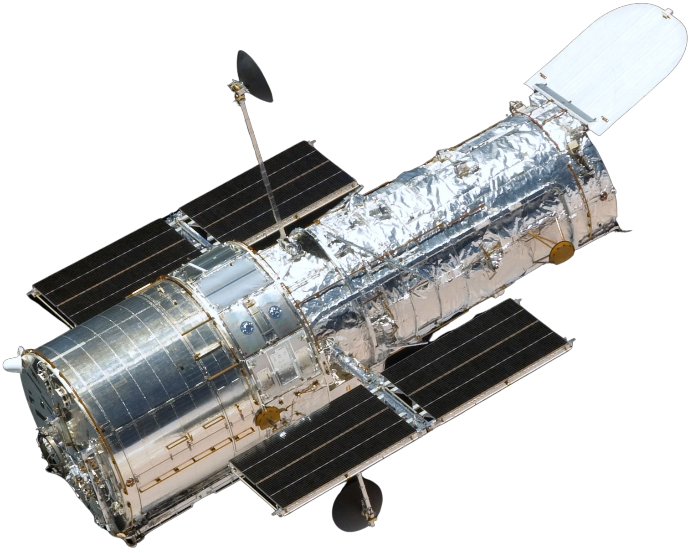

hubble space
telescope
Embark on a Journey of Discovery
Hubble Space Telescope
Orbiting high above the Earth, the Hubble Space Telescope has a clear view of the universe free from the blurring and absorbing effects of the atmosphere. In addition to observing visible and near-infrared light, Hubble detects ultraviolet light, which is absorbed by the atmosphere and visible only from space. The telescope has beamed hundreds of thousands of celestial images back to Earth during its time in space.
Hubble is a Cassegrain reflector telescope. Light from celestial objects travels down a tube, is collected by a bowl-like, inwardly curved primary mirror and reflected toward a smaller, dome-shaped, outwardly curved secondary mirror. The secondary mirror bounces the light back to the primary mirror and through a hole in its center. The light is focused on a small area called the focal plane, where it is picked up by its various science instruments.
30 Years of Exploration
In 2020, the Hubble Space Telescope achieves its 30th year in orbit. Hubble’s unique design, allowing it to be repaired and upgraded with advanced technology by astronauts, has made it one of NASA’s longest-living and most valuable space-based observatories, beaming transformational astronomical images to Earth for decades.
Hubble has fundamentally changed our understanding of the cosmos, and its story — filled with challenges overcome by innovation, determination, and the human spirit — inspires us.
Throughout the year, we’ll celebrate the many ways that Hubble has brought the universe home to Earth with new images, videos, and documentaries, interactive features, social media events, and more.
Hubble Space Telescope Model

Cosmic Reef
This Hubble 30th anniversary image, nicknamed the “Cosmic Reef” because of its resemblance to an underwater world, shows how young, energetic, massive stars illuminate and sculpt their birthplace with powerful winds and searing ultraviolet radiation.
The giant red nebula, NGC 2014, and its smaller blue neighbor, NGC 2020, belong to a star-forming region in the Large Magellanic Cloud, a satellite galaxy of the Milky Way, located 163,000 light-years away. A sparkling centerpiece of bright, hefty stars — each 10-20 times more massive than our Sun — in the center of the reddish NGC 2014 unleash ultraviolet radiation and winds of charged particles that heat and shape the gas around them.
The blue areas in NGC 2014 reveal the glow of oxygen, heated to nearly 20,000 degrees Fahrenheit by the blast of ultraviolet light. The cooler, red gas indicates the presence of hydrogen and nitrogen.
The blue nebula at lower left has been created by a solitary, mammoth star 200,000 times brighter than our Sun. This nebula's gas was ejected by the star through a series of eruptive events as the star cast off some of its outer layers.
Resources

Hubble Science

Quick Facts
Hubble Mission
About the Telescope
On April 24, 1990, the space shuttle Discovery lifted off from Earth with the Hubble Space Telescope nestled securely in its payload bay. The following day, Hubble was released into space, ready to peer into the vast unknown. Since then, Hubble has reinvigorated and reshaped our perception of the cosmos and uncovered a universe of unexpected wonders. Hubble has revealed properties of space and time that for most of human history were only probed in the imaginations of scientists and philosophers. Today, Hubble continues to provide views of cosmic wonders never before seen and is at the forefront of many new discoveries.
In 1923, Hermann Oberth—considered a father of modern rocketry, along with Robert H. Goddard and Konstantin Tsiolkovsky—published Die Rakete zu den Planetenräumen ("The Rocket into Planetary Space"), which mentioned how a telescope could be propelled into Earth orbit by a rocket.
Lyman Spitzer played a major role in the birth of the Hubble Space Telescope project.
The history of the Hubble Space Telescope can be traced back as far as 1946, to astronomer Lyman Spitzer's paper entitled "Astronomical advantages of an extraterrestrial observatory".In it, he discussed the two main advantages that a space-based observatory would have over ground-based telescopes. First, the angular resolution (the smallest separation at which objects can be clearly distinguished) would be limited only by diffraction, rather than by the turbulence in the atmosphere, which causes stars to twinkle, known to astronomers as seeing.

The continuing success of the OAO program encouraged increasingly strong consensus within the astronomical community that the LST should be a major goal. In 1970, NASA established two committees, one to plan the engineering side of the space telescope project, and the other to determine the scientific goals of the mission. Once these had been established, the next hurdle for NASA was to obtain funding for the instrument, which would be far more costly than any Earth-based telescope. The U.S. Congress questioned many aspects of the proposed budget for the telescope and forced cuts in the budget for the planning stages, which at the time consisted of very detailed studies of potential instruments and hardware for the telescope. In 1974, public spending cuts led to Congress deleting all funding for the telescope project.

Optically, the HST is a Cassegrain reflector of Ritchey–Chrétien design, as are most large professional telescopes. This design, with two hyperbolic mirrors, is known for good imaging performance over a wide field of view, with the disadvantage that the mirrors have shapes that are hard to fabricate and test. The mirror and optical systems of the telescope determine the final performance, and they were designed to exacting specifications. Optical telescopes typically have mirrors polished to an accuracy of about a tenth of the wavelength of visible light, but the Space Telescope was to be used for observations from the visible through the ultraviolet (shorter wavelengths) and was specified to be diffraction limited to take full advantage of the space environment. Therefore, its mirror needed to be polished to an accuracy of 10 nanometers, or about 1/65 of the wavelength of red light. On the long wavelength end, the OTA was not designed with optimum IR performance in mind—for example, the mirrors are kept at stable (and warm, about 15 °C) temperatures by heaters. This limits Hubble's performance as an infrared telescope.

The two initial, primary computers on the HST were the 1.25 MHz DF-224 system, built by Rockwell Autonetics, which contained three redundant CPUs, and two redundant NSSC-1 (NASA Standard Spacecraft Computer, Model 1) systems, developed by Westinghouse and GSFC using diode–transistor logic (DTL). A co-processor for the DF-224 was added during Servicing Mission 1 in 1993, which consisted of two redundant strings of an Intel-based 80386 processor with an 80387 math co-processor.[48] The DF-224 and its 386 co-processor were replaced by a 25 MHz Intel-based 80486 processor system during Servicing Mission 3A in 1999.[49] The new computer is 20 times faster, with six times more memory, than the DF-224 it replaced. It increases throughput by moving some computing tasks from the ground to the spacecraft and saves money by allowing the use of modern programming languages.
Additionally, some of the science instruments and components had their own embedded microprocessor-based control systems. The MATs (Multiple Access Transponder) components, MAT-1 and MAT-2, utilize Hughes Aircraft CDP1802CD microprocessors.[51] The Wide Field and Planetary Camera (WFPC) also utilized an RCA 1802 microprocessor (or possibly the older 1801 version).

30 years timeline of HUBBLE space telescope
EXPLORE TIMELINEGallery


HUBBLE Telescope
The telescope has helped scientists understand how planets and galaxies form. Galaxies contain billions of stars. A picture called "Hubble Ultra Deep Field" shows some of the farthest galaxies ever seen.

About Us
About the Telescope
International Partners
Space Telescope Science Institute
Communications and Outreach
Contact Us
Address
Space Telescope Science Institute
Customer Support
Leave a Comment